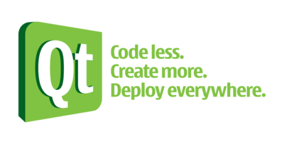
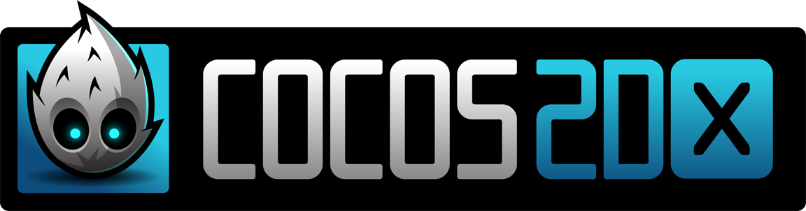
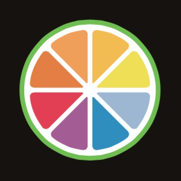
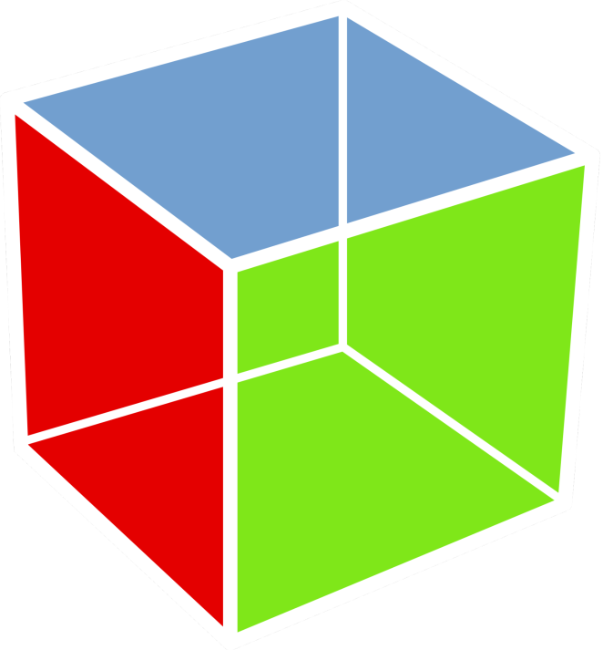

Обзор графических библиотек C++
Одним из наиболее мощных и популярных языков программирования является C++. На нём ежедневно пишут сотни приложений, нередко использующих GUI. Но работа с графикой не всегда удобна для программиста, поэтому на помощь приходят графические библиотеки, делающие разработку графической части быстрее и удобнее. О них и поговорим.
SFML
Simple and Fast Multimedia Library — одна из наиболее быстрых и удобных библиотек для 2D-графики. У неё минимальные требования к уровню знаний C++, плюс она отличается лёгкостью освоения. С её помощью вы напишете полноценную программу всего за несколько дней. А первое графическое приложение «SFML works!» — всего за минуту. Также библиотека отличается кроссплатформенностью, работая под Windows, Linux и Mac. SFML часто используется в небольших стартапах либо разработчиками, которые сами занимаются созданием игр. Инструмент популярен прежде всего потому, что не требует написания объёмного кода.
Qt

Это целый набор инструментов для проектирования GUI. Разумеется, можно писать и игры, но Qt привлекает больше своими достоинствами: удобство, быстрота, гибкость, кроссплатформенность. Библиотека доступна и на Windows, и на Linux, и на Mac, и на Windows Mobile, iOS и Android. С помощью метаобъектного компилятора Qt расширяет C++, предоставляя дополнительные функции (к примеру, сигналы и слоты). Имеет платную службу технической поддержки и платную лицензию. Есть большой выбор IDE: QDevelop, Edyuk, QtDesigner, QtCreator. Доступна интеграция с Eclipse, XCode, Visual Studio.
Cairo
Используется для отрисовки векторных изображений под Windows, Mac OS, Linux. Применяется в браузерном движке Gecko, лежит в основе ряда ОС: MorphOS, AmigaOS. Если выбираете Cairo, будьте готовы к отсутствию ресурсов на русском языке. Библиотека поддерживает взаимодействие с OpenGL-бэкендом с поддержкой GPU. Это, несомненно, открывает ряд полезных функций.
Cocos2D-X

Кроссплатформенная библиотека, призванная упростить разработку игр для мобильных платформ. По кроссплатформенности схожа с Qt, но есть и другие плюсы: доступность, удобство, возможность создания отдельного конструктора игр, который основан на библиотеке Cocos Creator. Прекрасно подходит, если нужно работать с анимацией и графикой в небольших объёмах, т. к. вся графика добавляется извне (на неё ссылаются из кода). Учтите, что уроки на эту библиотеку есть только на английском.
Juce

Кроссплатформенный фреймворк, который служит для создания плагинов и приложений на C++. На английском языке есть очень много документации по Juce Библиотека особенно популярна среди тех, кто разрабатывает аудио-софт, так как имеет набор оболочек-интерфейсов для создания аудио-плагинов.
SDL 2.0
Кроссплатформенная 2D-библиотека для написания приложений (как правило, игр). Поддерживает Windows, Mac OS, Linux, Android, Windows Mobile, iOS. Характеризуется быстротой, надёжностью и лёгкостью в эксплуатации. Также в SDL реализованы профессиональные инструменты, предназначенные для работы со звуком, что является большим плюсом при реализации крупных проектов. Остаётся добавить, что библиотека хорошо интегрируется с OpenGL и комбинируется с wxWidgets.
GTK+

Тоже очень известная графическая библиотека, которая широко применяется во многих системах. Сначала этот фреймворк задумывался как GIMP-компонент, но спустя 20 лет после выхода в свет первой стабильной версии библиотека нашла применение и в сотнях других приложений. Сегодня практически не уступает Qt, поддерживая разные языки программирования. Кстати, это одна из немногих библиотек,которая взаимодействует с языком C.